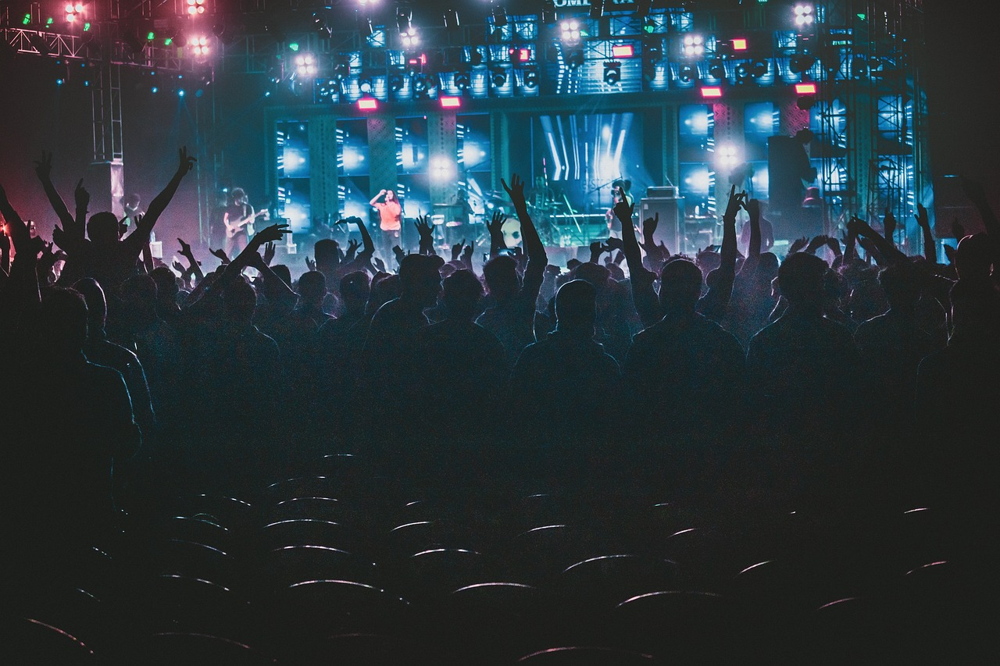
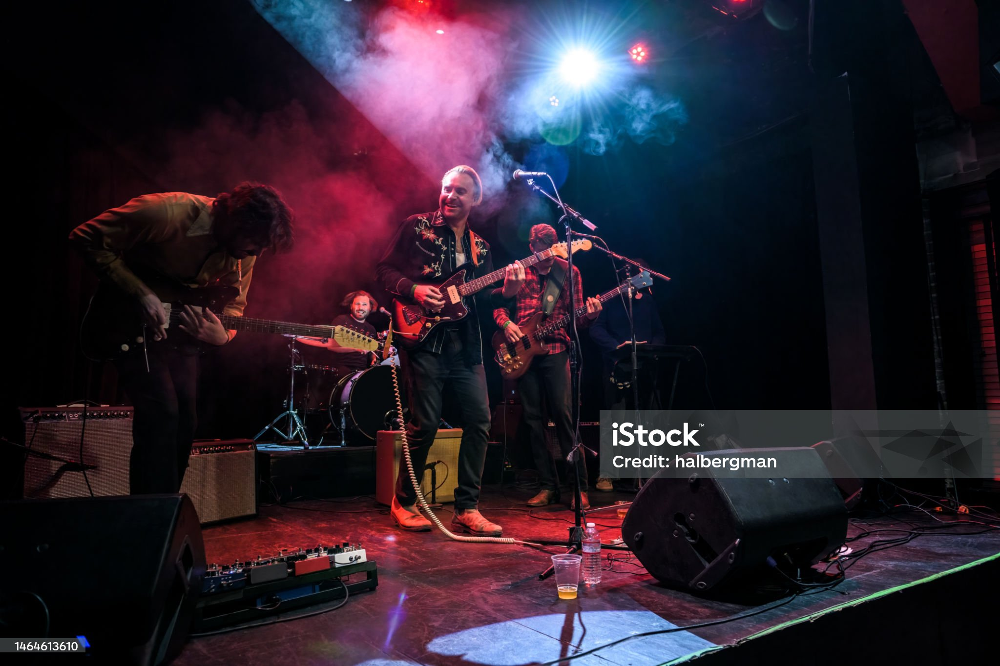
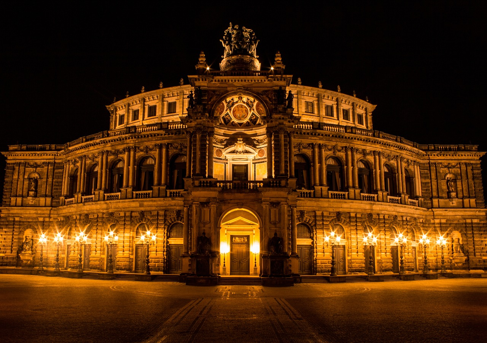

Lilia sola regunt lunam unda castra leonemLes lys règnent seuls sur la lune, les ondes, la forteresse et le lion
Voici une liste de concerts à venir à Bordeaux pour novembre 2024 :

Isulia Festival - Un événement électro avec des artistes comme Desire, MCR-T, et Marcel Dettmann, du 8 au 10 novembre.
SCH - Le célèbre rappeur français sera en concert le 18 novembre.
Shaka Ponk - Le groupe rock fera sa dernière tournée le 20 novembre à Bordeaux.
The Rabeats - Tribute to The Beatles - À l'Arkéa Arena le 23 novembre, pour revivre la magie des Beatles.
Le Monde d'Hans Zimmer - Un concert épique avec les bandes sonores iconiques du compositeur Hans Zimmer, le 24 novembre.
Concert dans la ville

Hymne à la joie
Le concert sera retransmis en direct dans plus de 10 lieux à Bordeaux, dans 70 lieux de la région Nouvelle-Aquitaine et en direct
de Los Angeles et Munich à l'occasion de l'anniversaire de leur jumelage avec la ville de Bordeaux.
L'Opéra National de Bordeaux propose une saison riche et variée en 2024-2025. Voici un aperçu des spectacles programmés en novembre :

"Il Cappello di paglia di Firenze" - Cet opéra comique de Nino Rota, célèbre pour ses musiques de film, sera interprété du 7 au 9 novembre.
"Così fan tutte" - L'un des opéras célèbres de Mozart, sera mis en scène du 19 au 26 novembre.
Concerts de l'Orchestre National Bordeaux Aquitaine - Plusieurs concerts sont aussi programmés tout au long du mois, avec des œuvres symphoniques et de musique classique.
Spectacles de ballet et récitals - D’autres événements incluent des spectacles de danse et des récitals de musiciens invités.
Pour plus de détails et pour réserver vos billets, vous pouvez consulter les sites d'événements comme l'Arkéa Arena ou le site officiel de Bordeaux Tourisme.